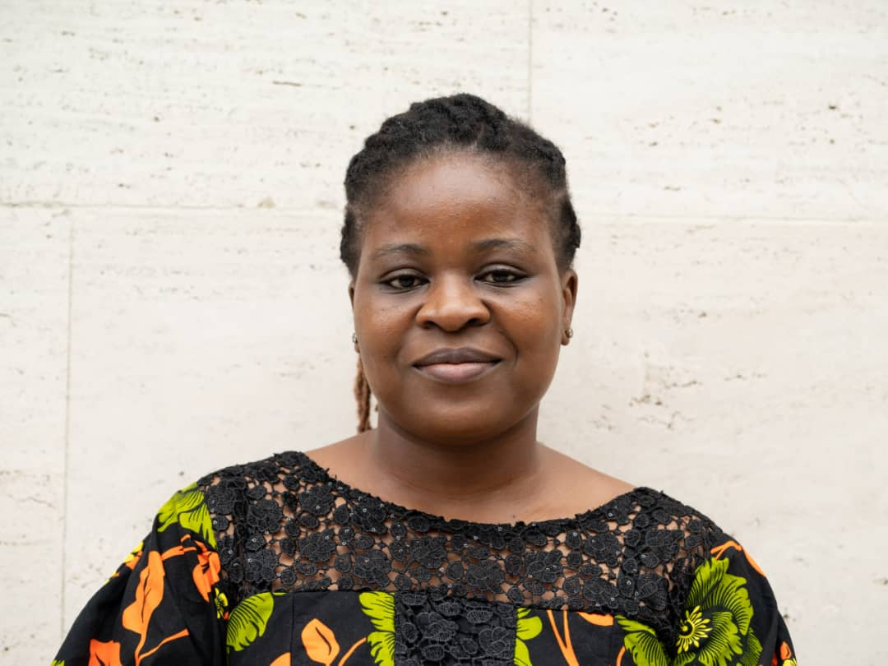

Abiola trained as a sociologist and earned his PhD, but what drives his work is a frustration: rigorous research circulates in academic networks and never reaches the institutions that could act on it. The 1864 Institute is his attempt to close that gap from the inside out.
His background spans research and applied development work in Nigeria, from field experiments with public institutions to co-founding organisations that put evidence into practice. He leads institutional strategy and government partnerships, and is a postdoctoral researcher at the University of Münster.
Abiola is an alumnus of Obafemi Awolowo University (OAU), the University of Ibadan (UI), and Humboldt University of Berlin.

Nneka believes good evidence should be uncomfortable to ignore. Her doctorate is in economics, and her research on gender, institutions, and development in Africa is rigorous enough to hold up to scrutiny and grounded enough to land with decision-makers.
She is the methodological backbone of the Institute. Every tool we build, every finding we publish, every claim we make passes through her. She sets the bar and keeps it there. She is also a Consultant Economist with the World Bank Nigeria Gender Innovation Lab.
Nneka earned a first-class degree at the University of Benin (UNIBEN) and a master's with distinction at the University of Ibadan (UI).
Gershinen is a data scientist who writes for people outside data science. Across five years in public health, economics, and applied artificial intelligence, he has built predictive models and machine learning systems and turned technical findings into recommendations that policy and non-technical audiences can use.
At 1864 he scopes AI and data tools for government, identifies partner agencies, and moves the pipeline from first meeting to formal agreement.
Gershinen holds a bachelor's in computer science from the University of Jos, and is completing a master's in data science at the Nigerian Defence Academy and a postgraduate diploma in economics at the National Open University of Nigeria.
We are hiring
One open role right now: a Research Associate.